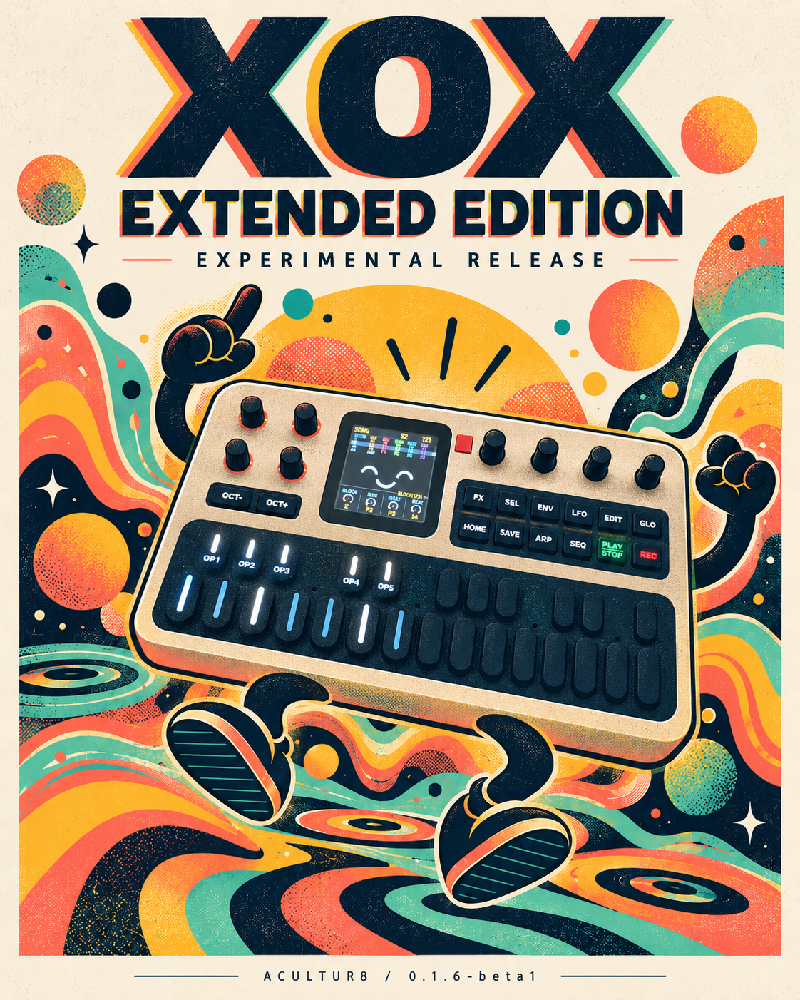

Hear the engine
Program patterns on the instrument panel and listen through the same C sound engine used by the working firmware.
LATEST EXPERIMENTAL FIRMWARE / M-VAVE FM-1
0.1.6-beta1 · experimental prerelease
Blocks, bridges and your own hits.
Firmware: independent block variations, deletion/Undo, 32-bar blocks and scale-safe transposition. The separate browser Slice Profiles companion finds and shapes WAV hits. Back up first and read known issues. The existing emulator below remains unchanged; integration is deferred for the stable release.
Release details & installation · Search the FAQ · Open slice editor · GitHub prerelease

The emulator below is a separate, earlier browser build. For the latest experimental device firmware, use the download above.
ACULTUR8 / FM1 LAB · BROWSER ALPHA
Two drum machines, two basses and a break player. Audition the shared X0X engine, import your exact slices and hear them follow the sequencer.
This release is for browser listening and development. Physical FM1 qualification is a separate milestone. The new sound strips, arrangement blocks and chord-following features are being developed in stages.
Program patterns on the instrument panel and listen through the same C sound engine used by the working firmware.
Import a matching WAV and JSON or CSV. Original slice boundaries and trigger positions stay together.
Move slice triggers with FM1 tempo while each slice retains its pitch. Ringing tails can overlap.
In the emulator, press Load public demo · 120 BPM, switch the instrument on and choose Play with FM1 · keep pitch. Change the tempo to 90, 120 or 180 BPM to compare.
You can also download the pair and test the normal file importer. This six-slice demo is generated from sine waves; it contains no third-party loop audio.
The local lab adds source editing, recoverable checkpoints and emulator rebuilding. Native REX conversion needs a separately configured local decoder; this public website imports the resulting WAV and markers.